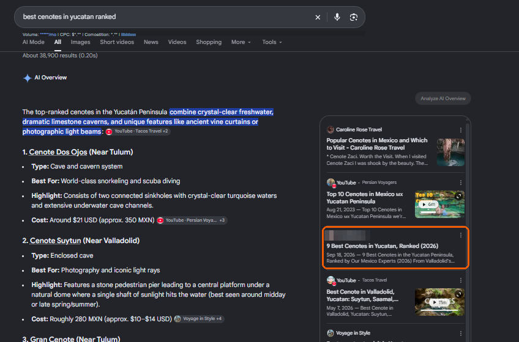
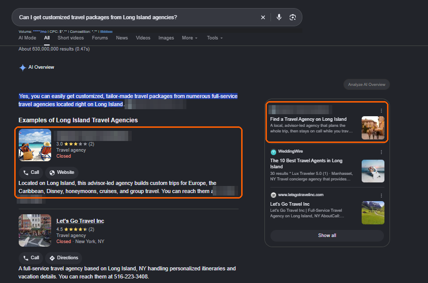

Speed case studies
Published, indexed, ranked and cited by AI. In days, not months.
Two travel agency clients · storebox.ai · October 2026
2 daysfrom publishing to a Google AI Overview citation
51 of 52new articles indexed by Google within 9 days
22pages averaging page 1 of Google in their first 9 days
+94%weekly Google impressions in 4 weeks
What happens after Storebox hits publish
Both agencies followed the same path. A full content batch goes live in a day, Google indexes it within days, pages reach page 1, and AI engines start citing them. Every number below comes from live Google Search Console and Semrush exports. Client names withheld for confidentiality.
1
Day 0 · Published
The full content batch goes live in a single day, not dripped out over weeks.
2
Day 1-2 · Ranked and cited
First rankings show in Semrush, then a page takes a source slot in Google's AI Overview.
3
Day 9 · Indexed
98% of new pages are in Google, with 22 of them already averaging page 1.
4
~1 month · Mentioned by AI
Pages are cited in AI Overviews for high-intent travel queries across languages.
Case study 1
Mexico Travel Agency
Tour agency and destination portal · Mexico, English and Spanish · client name withheld
The challenge: new to Google, up against governments and giants
Before booking Mexico, travelers ask one question first: "Is it safe?" Those answers are owned by government advisories, news sites and large travel publishers. The client's site only started showing up in Google Search in September 2026.
Sep 9in Google since: first day of Search Console data
243daily impressions, week 1 average
23.8average position, page 3 of Google
Noneblog content: zero articles before Sep 15
What Storebox did
1
Destination guides
Cenotes ranked, Day of the Dead in Oaxaca, a 7-day Yucatan road trip and Mexico City day trips. Published Sep 15 to 25.
2
52 articles in one day
On Oct 15: an "Is it safe?" guide for every major destination, plus best time to visit, where to stay and hotel guides.
3
Written for AI answers
Answer-first openings, a clear verdict per destination and FAQ sections that AI engines can quote directly.
4
Indexation on day one
Sitemap and internal links updated the same day, so Google found every new page without waiting.
The question this answers
How long does brand-new Storebox content take to get indexed, rank on page 1 and get cited by Google's AI? For this client, the answer was 2 to 9 days.
The 52-article launch, day by day
Day 0Oct 15: 52 articles go live, all in one day
Day 1-2Oct 16-17: "Is Ensenada Safe?" takes the #1 AI Overview source slot (390 searches/mo)
Day 9Oct 24: 51 of 52 indexed, 22 on page 1, 3,010 impressions
The results after 9 days
98%of new articles indexed in 9 days (51 of 52)
22articles averaging page 1 of Google
3,010impressions in the first 9 days
94US keywords tracked by Semrush for the new guides
Page 1 in 9 days: top launch articles
Google Search Console impressions Oct 15 to 24, with average position. Every article was published on Oct 15.
Is Sinaloa safe?406pos 7.4
Is Chiapas safe?237pos 6.5
Is Acapulco safe?207pos 7.6
Is Culiacan safe?184pos 6.6
Is Queretaro safe?143pos 6.8
Is La Paz safe?122pos 7.4
Is Puebla safe?115pos 8.1
Is Jalisco safe?112pos 7.6
Green = page 1 of Google. Every safety guide above landed on page 1 within 9 days.
Total Google impressions, first month
Google Search Console, running total from the site's first day.
Weekly impressions went from 1,703 to 8,352 in four weeks, 4.9× week 1.
Rankings won inside a month
9.1PAGE 1
Day of the Dead in Oaxaca
Published Sep 23. 915 impressions and 20 clicks: the site's top article within a month.
3.1PAGE 1
yucatan itinerary 7 days
Road trip guide published Sep 25, now near the top of page 1.
8.0PAGE 1
is sinaloa safe
Published Oct 15. 184 impressions in its first 9 days.
6.1PAGE 1
is it safe to travel to sayulita mexico right now
Long-tail safety query, published Oct 15.
Cited by Google's AI
Organic rankings take time to climb. AI citations can come first, because AI engines pick the page that answers the question most clearly.
google.com · best cenotes in yucatan ranked · AI Overview

The client's cenotes guide (name blurred) is a cited source in Google's AI Overview, next to YouTube creators and established travel blogs. Published Sep 18, 2026.
Mentioned in AI answers in three languages
SpanishMexico market. Mentioned in AI answers in its home market (AI visibility 20)
FrenchFrance market. "Valladolid travel guide" topic, 3,432 searches/mo (AI visibility 19)
DutchNetherlands market. "Mexico travel safety" topic (AI visibility 19)
Bottom line: 52 articles published on Oct 15. A Google AI Overview citation by Oct 17. 51 indexed and 22 on page 1 by Oct 24. Source: Semrush AI Visibility and Google Search Console, October 2026.
Case study 2
Long Island Travel Agency
Full-service travel agency · Long Island, New York · client name withheld
The challenge: experienced advisors, invisible expertise
An established agency with a team of specialist advisors for cruises, safaris, the Caribbean and Europe. Online, almost none of that expertise was searchable. Its top-clicked searches were its own name.
247daily impressions on Sep 27, before the main launch
0advisor-written guides: no content under advisors' names
Brandtop-clicked searches were people who already knew the agency
What Storebox did
1
Answer the big question
"What does a travel agent do?", "Why use a travel agent?" and "Benefits of using a travel agent". Published Sep 22 to 29.
2
36 advisor guides in one day
A Travel Journal launched Sep 30. Every guide is bylined by a real advisor, in their own specialty.
3
Comparison content
Bermuda vs Bahamas, Cancun vs Riviera Maya, Royal Caribbean vs Carnival: what travelers ask right before booking.
4
Local page for AI
A Long Island agency page written to answer local "find a travel agent" questions in AI search.
42 articles in 9 days. All results below are from the 28 days ending Oct 24, 2026: 24 days after the Travel Journal went live.
The results: 24 days after launch
44 of 44new pages indexed and showing in Google
64%of all site impressions now come from new content
16new pages averaging page 1 (36 in the top 20)
3.5×daily impressions: 247 on Sep 27, 863 on Oct 22
Total Google impressions, first month
Google Search Console, running total from week 1.
From 2,551 impressions in week 1 to 4,951 in week 4, a 94% weekly rise.
New content already pulling its weight
Top new pages by impressions, with average Google position. 9,702 of the site's 15,058 impressions came from pages published Sep 22 to 30.
What does a travel agent do?3,454pos 7.9
Bermuda vs Bahamas1,482pos 7.5
Best time: South Pacific517pos 7.7
Cancun vs Riviera Maya484pos 11.6
Best Caribbean islands472pos 30.6
Best cruise lines, families387pos 28.2
Best adults-only all-inclusives341pos 16.6
Best all-inclusives in Mexico281pos 18.2
Green = page 1 of Google. The rest are climbing from their first few weeks live.
Page 1 in under a month
9.3PAGE 1
what is a travel agent
810 impressions. A national, high-volume question.
8.7PAGE 1
bermuda vs bahamas
377 impressions, plus page 1 for 18 more variations of the query.
8.4PAGE 1
what does a travel agent do
305 impressions. Article published Sep 23.
7.9PAGE 1
why use a travel agent
Article published Sep 22. The page itself averages position 3.2.
Named first by Google's AI for Long Island
Someone asks Google whether Long Island agencies offer custom travel packages. Google's AI names the client first and uses its Long Island page as the lead source.
google.com · Can I get customized travel packages from Long Island agencies? · AI Overview

Google's AI Overview lists the client first among Long Island agencies (name and phone blurred), cites it in the answer itself, and uses its Long Island page as the lead source in the panel.
Semrush tracks the client in AI answers for the "Travel Agencies in Long Island" topic, with an AI visibility score of 19 and 3 AI mentions on its own brand topic.
Bottom line: 44 of 44 new pages indexed, 16 averaging page 1, and 64% of the whole site's Google impressions now come from content published in a single month. Source: Google Search Console and Semrush, October 2026.
How Storebox ships this fast
Both clients followed the same process. Speed is built into how we publish, not left to chance.
1
Publish in batches, not drips
52 articles in one day for one client, 42 in nine days for the other. Google sees a site with real topical depth from day one.
2
Indexation is part of publishing
Sitemaps, internal links and Search Console are handled the same day. That is how 98% of pages were indexed within 9 days.
3
Written for AI answers
Answer-first paragraphs, clear verdicts and FAQ sections. That is why an article was cited in a Google AI Overview 2 days after going live.
4
Real expertise, visible
Content bylined by the client's own advisors and pages built for local questions. Google and AI engines trust named experts.
Day 2first Google AI Overview citation for a new article
Day 951 of 52 articles indexed, 22 averaging page 1
Day 2464% of a site's Google impressions from new content